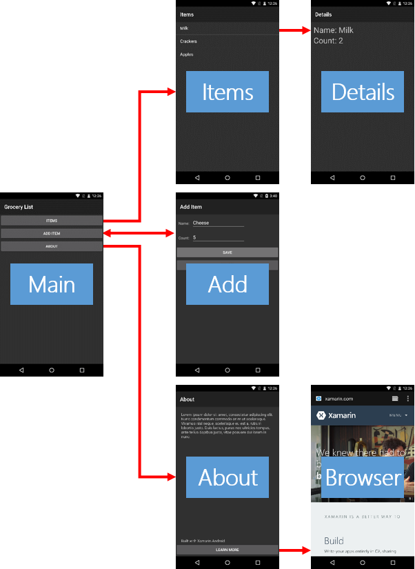

Exercise 1: Explore the completed lab exercise
Duration
5 minutes
Goals
The primary goal of this lab is help you understand the course goals.
The exercises in this course session will help you complete a "Grocery List" application. All of the Activities, the entire UI, and the data-management classes will be provided for you. Your task will be to implement the Activity-to-Activity navigation. In a few cases, you will need to pass arguments and harvest results.
The architecture of the app is shown below. Each screenshot is a separate Activity. The red arrows indicate the Activity-to-Activity navigation that you will code. Note that the "Browser" Activity is from the standard Android installation and is not packaged with your app.
There is no code to write in this first exercise. This is just to give you an overview of the design of the GroceryList App.
Open and Browse through the Solution File
Open Xamarin Studio and open the GroceryList.sln file through the "File > Open.. " menu option
Open the various AXML layout files in the Resources\Layout folder and observe how they are structured. You can use a similar approach in your own MVP implementation.
Open the various Activity class files in the Root folder and observe the C# code.
Notice the way the Item.cs class is setup. There are two properties. The constructor takes two arguments/parameters in this case. The code also overrides the default ToString() method.
In the MainActivity.cs, observe the way the List of Items implementation is declared and used. You will want to use a similar pattern in your App:
public static List
Notice how new items are added to the list:
Items.Add(new Item("Milk", 2));
In the DetailsActivity.cs file, notice how the Items list property in the MainActivity class is used:
var item = MainActivity.Items[position];
Summary
The Grocery List app demonstrates all the common Activity interaction patterns: one Activity starting another, passing arguments, harvesting results, and launching a system Activity.